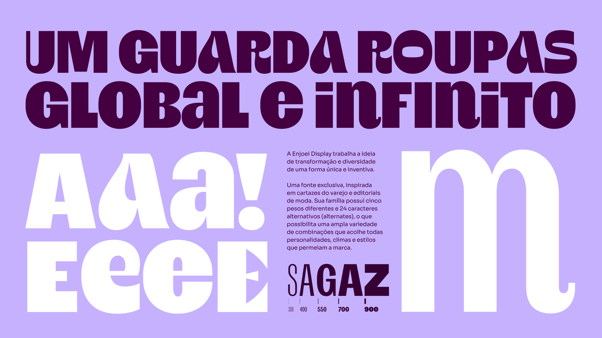
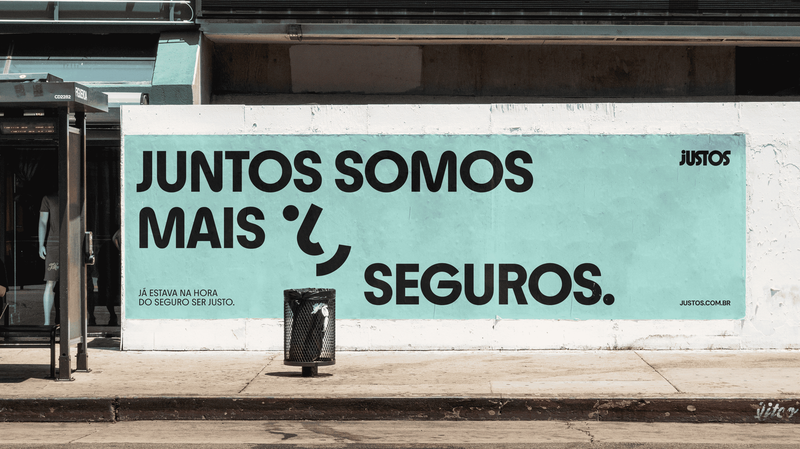
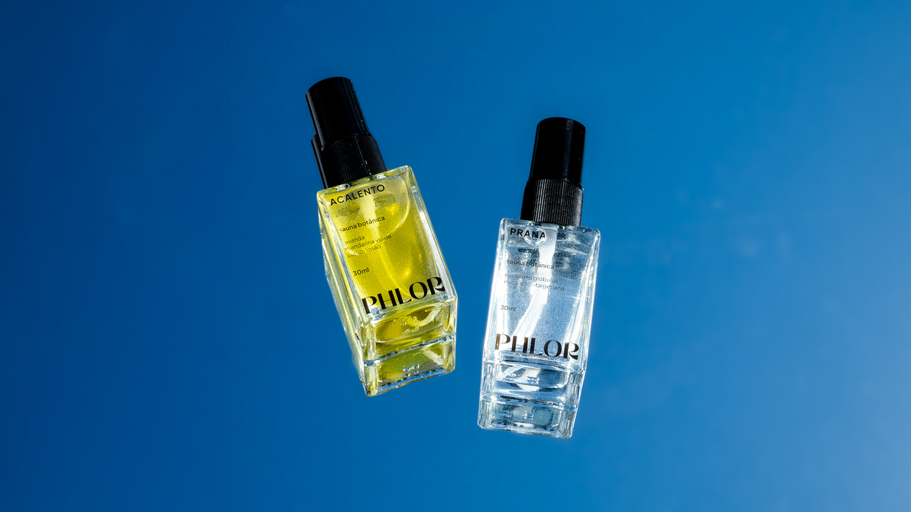

Enjoei
Brand identity built on structure and coherence. Custom typography and generative design tools that maintain the brand's irreverent voice.
I shape brands &
build visual identities.
São Paulo–based Multidisciplinary Designer, focused on Brand & Digital. Currently independent. Formerly Senior Designer at Tatil Design. Collaborated with agencies and consultancies like R/GA, Monigle (US), Marcas com Sal, among others.
9+ years building logos, visual identities, typography, iconography, packaging, signage, and campaign art direction for brands like Itaú, Ambev, Natura, Avon, Google, Danone, C6, Caixa, Enjoei, Vibra and 99 App. Recognized at the Brazilian Graphic Design Biennial, Latin American Design Awards and Brazil Design Awards.

Brand identity built on structure and coherence. Custom typography and generative design tools that maintain the brand's irreverent voice.

Bold, optimistic identity for an insurance brand. Traffic-inspired shapes and custom icons for a simpler, more human experience.

Identity for a wellness brand. Typography expands gently and layouts embrace silence, focusing on the essential.